Programmazione - Obiettivi CdR
Obiettivi CdR – Utente responsabile di CdR
La scheda Obiettivi CdR, visibile unicamente all'utente Responsabile di CdR, è raggiungibile attraverso la voce di menù “Programmazione – Obiettivi CdR” – Figura 1
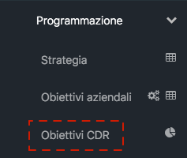
Accedendo a tale sezione (figura 2) l’utente troverà l'elenco degli obiettivi assegnati al CdR di cui è responsabile e, più in generale, del CdR selezionato. Il Responsabile infatti potrà, selezionando tramite l’apposito menù a tendina un CdR del proprio ramo gerarchico, visionare (senza poter modificare) tutti i contenuti della scheda Obiettivi anche degli altri CdR afferenti (ad esempio il Direttore di Dipartimento potrà selezione una qualunque UO del Dipartimento e visualizzare i contenuti della relativa scheda Obiettivi CdR).
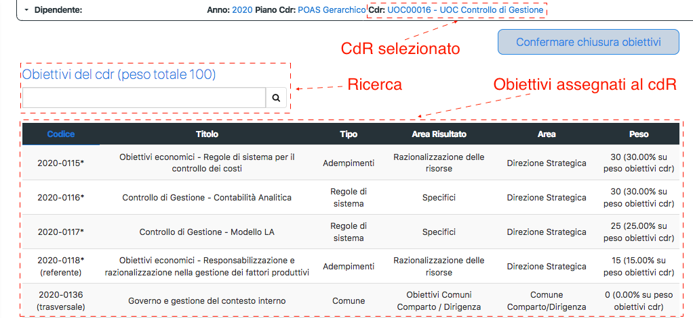
L'elenco degli obiettivi rappresentato in figura 2 presenta sinteticamente il codice, il titolo, il peso dell'obiettivo (espresso sia in valore assoluto che in centesimi-%) e le categorie Tipo, Area di Risultato ed Area. All'interno della colonna relativa al codice, inoltre, nel caso di un obiettivo assegnato a più CdR di II livello (Dipartimenti, Distretti e UO di Staff), la scheda evidenzia se l'obiettivo è assegnato al CdR in qualità di referente o coreferente. Sempre all'interno della colonna relativa al codice la scheda segnala con un asterisco (*), per singolo obiettivo, l'eventuale presenza di azioni attuative definite. È inoltre presente un apposito filtro di ricerca, mediante il quale sarà possibile ricercare l’obiettivo desiderato.
Nella stessa schermata è presente il pulsante “Confermare chiusura obiettivi” che dovrà essere utilizzato a valle del processo di assegnazione degli obiettivi alle strutture e al personale afferente e mediante il quale sarà possibile chiudere tutti gli obiettivi presenti; in tale modo non sarà più possibile modificare azioni ed assegnazioni, mentre il personale associato potrà visualizzare gli obiettivi di propria competenza.
Assegnazione degli obiettivi
L’assegnazione degli obiettivi può essere effettuata dalla schermata di sintesi dell’obiettivo oppure tramite il cruscotto di controllo e gestione pesi.
Schermata di sintesi dell’obiettivo
Cliccando su ciascuna riga relativa al singolo obiettivo si accede alla schermata di dettaglio dello stesso (Figura 3).
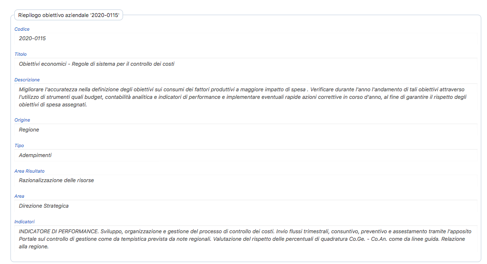
All'interno di tale schermata saranno disponibili le sezioni di riepilogo dell'obiettivo che riportano tutte le informazioni circa i contenuti dell'obiettivo stesso, gli eventuali referenti/coreferenti, gli indicatori associati, le azioni definite dal CdR (ed eventualmente dal superiore gerarchico) ed il parere espresso dal superiore gerarchico in merito, dipendenti e UO di afferenza ai quali l'obiettivo è assegnato e per ultima la sezione di rendicontazione, che consentirà l'accesso alle singole rendicontazioni attive nell'anno di budget.
Scorrendo verso il basso la schermata di sintesi di ciascun obiettivo verranno visualizzate le sezioni relative all’assegnazione dell’obiettivo ai CDR afferenti al proprio Dipartimento/UO ed al personale direttamente assegnato al proprio CDR (Figura 4).
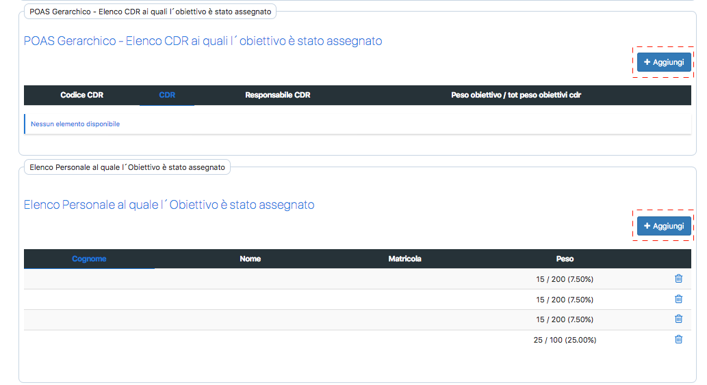
Cliccando su “+ AGGIUNGI” si accederà alla sezione di assegnazione dell’obiettivo al CDR/Dipendente (in relazione alla sezione sulla quale si sta operando – la modalità operativa di assegnazione è la medesima). Attraverso il menù “a tendina” occorrerà selezionare il singolo CDR/Dipendente al quale si vuole assegnare l’obiettivo, definire il peso in valore assoluto e infine Una volta completa l’operazione, cliccare su “Inserisci”, in fondo alla schermata a destra, per completare l’assegnazione e salvare le modifiche apportate (Figura 5).
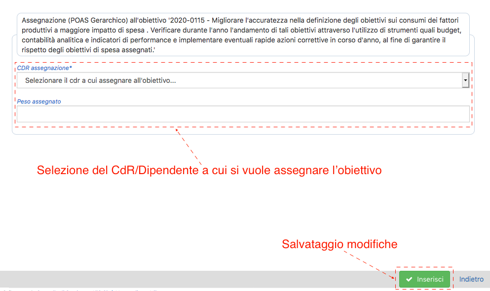
Cruscotto di controllo e gestione pesi
Al fine di agevolare le attività di assegnazione degli obiettivi e dei relativi pesi alle UO ed al personale afferenti, la PP&C propone il cruscotto di controllo e gestione dei pesi raggiungibile cliccando sull’icona “grafico a torta” presente accanto alla dicitura “Obiettivi CdR” (Figura 6)
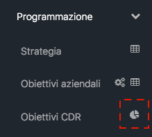
Il cruscotto è composto da tre schede (figura 7), la prima informativa mentre le altre due contengono le matrici di assegnazione degli obiettivi e relativi pesi rispettivamente ai CdR afferenti e al personale assegnato.
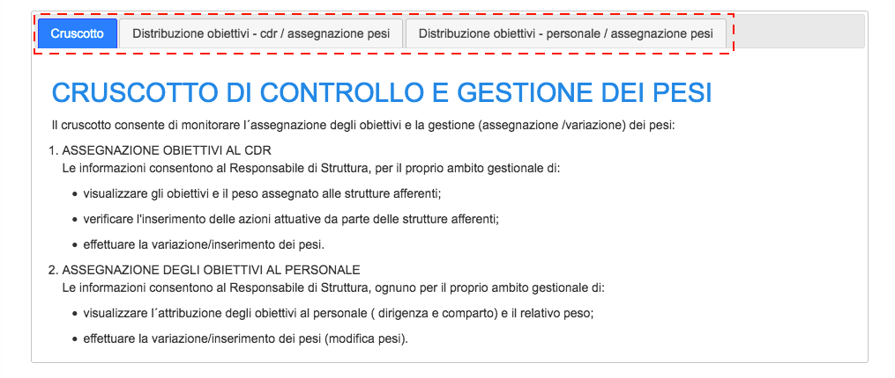
La matrice proposta all'interno del cruscotto riporta in colonna gli obiettivi assegnati al proprio CDR ed in riga le UO o il personale afferenti, restituendo in modo intuitivo l’informazione circa:
- Le UO ed i dipendenti coinvolti nella realizzazione del singolo obiettivo (visione per colonna);
- Il complesso degli obiettivi e dei relativi pesi assegnati alla singola struttura ed al singolo dipendente (visione per riga).
All’interno della matrice vengono riportati i pesi degli obiettivi assegnati alle diverse strutture/personale e le relative celle sono evidenziate in base a 3 diverse tipologie:
- Azioni definite
- Azioni non definite
- Obiettivo non assegnato dal CDR
Cliccando all'interno di una singola cella compilata della matrice si potrà accedere alla visualizzazione del dettaglio dell'obiettivo in colonna per il CdR in riga, consultandone le eventuali azioni definite e la declinazione ai livelli gerarchici inferiori.
È inoltre presente un pulsante di estrazione che permette di scaricare in formato excel tutti i dati relativi agli obiettivi assegnati alle strutture di responsabilità. (figura 8)
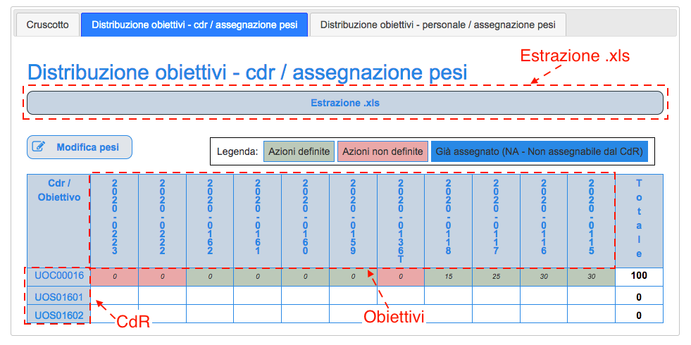
L’assegnazione/cancellazione degli obiettivi e l’indicazione o modifica del relativo peso avviene in egual modo su entrambe le matrici (CdR o Personale). È sufficiente accedere alla scheda relativa all’ambito di assegnazione, cliccando ad esempio “DISTRIBUZIONE OBIETTIVI – CDR /ASSEGNAZIONE PESI” e cliccare sul tasto “MODIFICA PESI” (Figura 9)
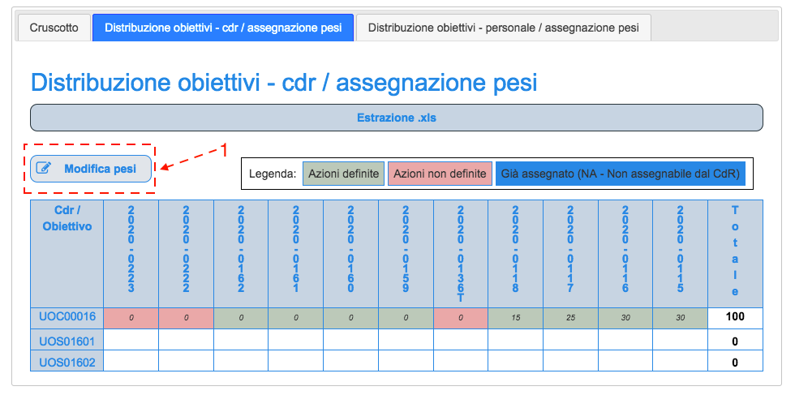
a questo punto le celle della matrice diventeranno editabili e l’assegnazione di un obiettivo avverrà inserendo nella cella corrispondente all’incrocio tra codice obiettivo e CdR/Nominativo il valore numerico relativo al Peso dell’obiettivo che si sta attribuendo (Figura 10). La modifica/cancellazione di un obiettivo già assegnato, ma ancora non “chiuso” in modo definitivo, avviene modificando o cancellando il peso inserito nella cella corrispondente all’obiettivo, che verrà visualizzata come editabile
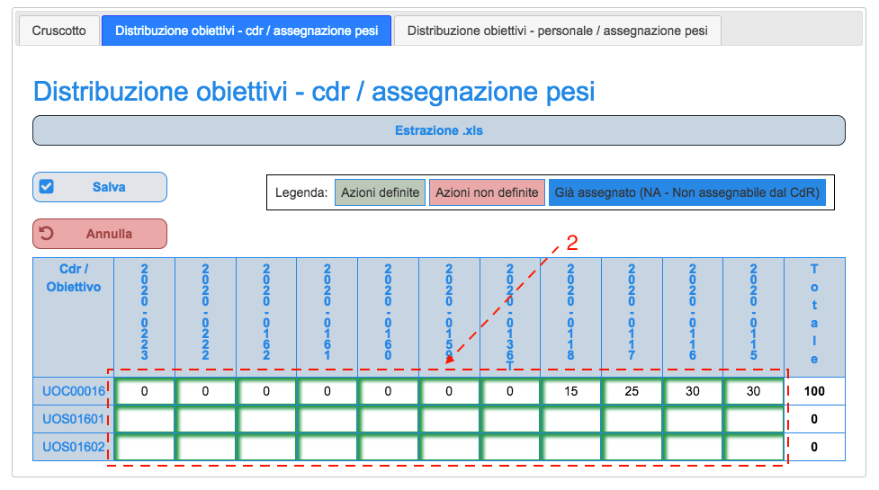
Una volta inserite le assegnazioni e relativi pesi bisognerà cliccare sul taso “SALVA” in modo da registrare le modifiche apportate.
Chiusura scheda obiettivi
Una volta terminata la fase di definizione delle azioni e l'assegnazione degli obiettivi ai CdR ed al personale afferenti, al fine di generare le schede obiettivi individuali del personale dipendente il Responsabile di CdR dovrà procedere alla "chiusura" della scheda Obiettivi CdR, ciò al fine di "congelare" l'assegnazione effettuata rendendola consultabile ai collaboratori per l'opportuna presa visione.
Tale operazione dovrà essere effettuata dalla schermata “Obiettivi CdR” (vedi Figura 1 e Figura 2) cliccando sull’apposito pulsante “Confermare chiusura obiettivi” (Figura 11)
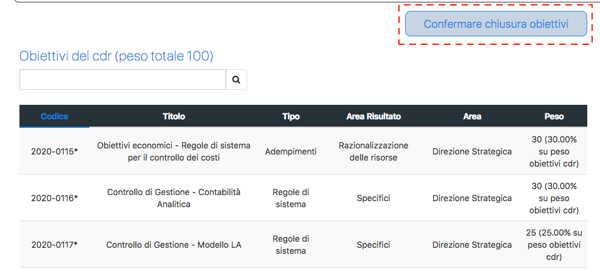